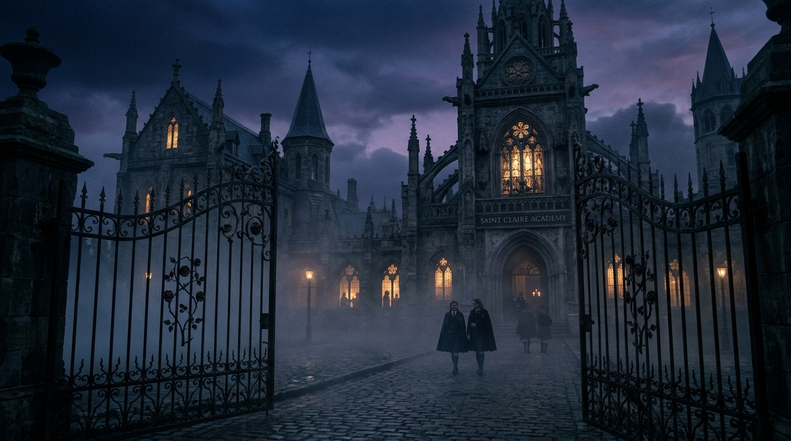
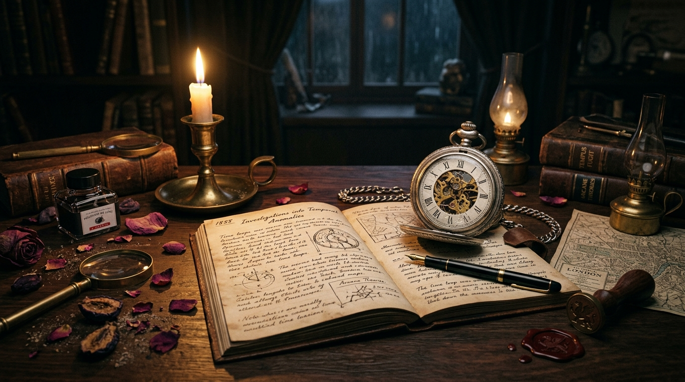

O segredo de
Saint Claire
Rebecca acorda três semanas no passado. Entre boatos anônimos e alianças frágeis, cada escolha pode romper o ciclo antes do desfecho.
(Você tem 3 semanas para intervir)
“Quem estava no banheiro da ala leste? Ninguém quis se aproximar...”
O que as paredes de Saint Claire escondem:
Ninguém escuta quando todos fingem perfeição para proteger aparências.
Começa com risos abafados, cadeiras afastadas e olhares cúmplices.
Prints anônimos e bilhetes circulam antes da primeira aula terminar.
Melissa voltou 3 semanas. Catalogar cada detalhe é a chave da história.
O lema oficial serve de escudo para acobertar a covardia dos corredores.
Quem cala consente. Romper a cadeia exige posicionamento ativo.

Bilhete Rasgado:
“Se você contar para a diretoria, ninguém vai acreditar em você.”
A tragédia não foi um acidente repentino. Foi construída dia após dia, diante dos olhos de quem preferiu não agir.
O silêncio mais destrutivo é aquele que ninguém teve coragem de romper.
Investigue em 4 passos
Cada aluna guarda motivações e segredos. Transite pelas camadas de Saint Claire para revelar a verdade:
“Se você falar dos bilhetes do armário, vai se arrepender...”
“O que vocês fizeram com a Rebecca?”
“Melissa, não se meta. A turma precisa focar nos exames.”
O jogo é um alerta urgente sobre o que acontece ao ignorarmos a dor de quem está ao lado.